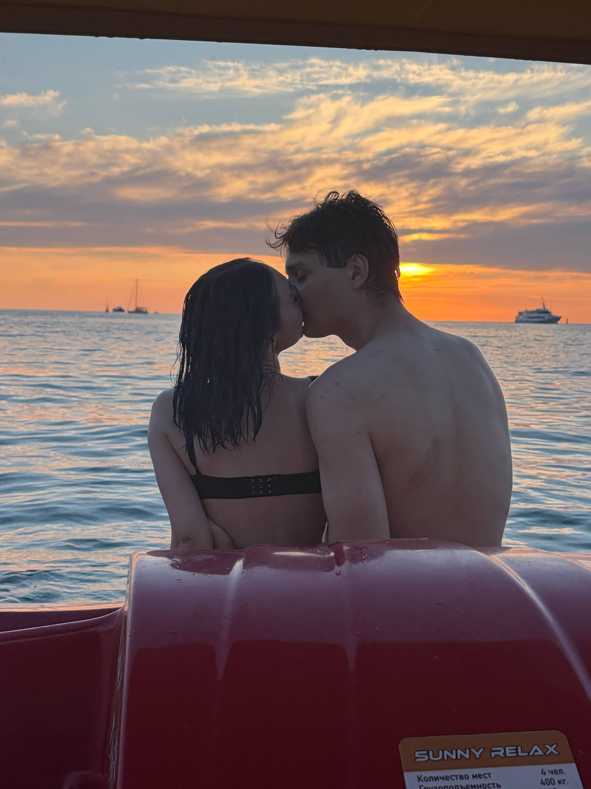
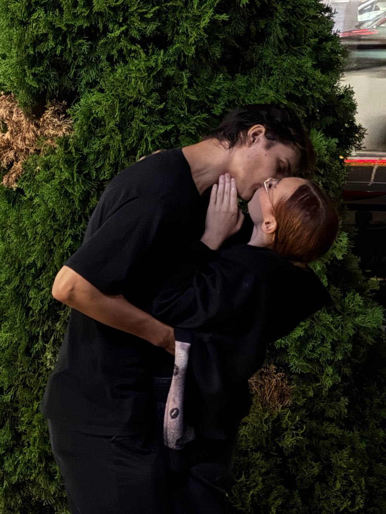
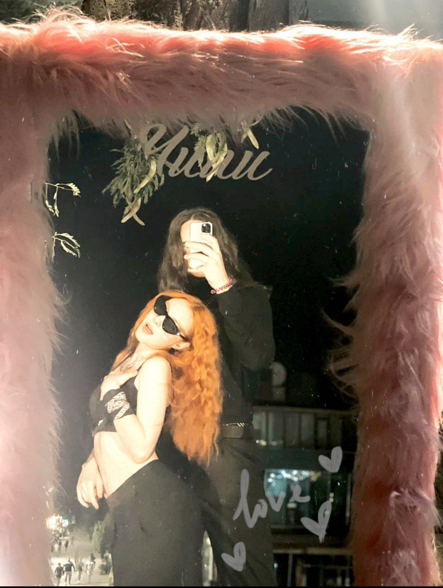
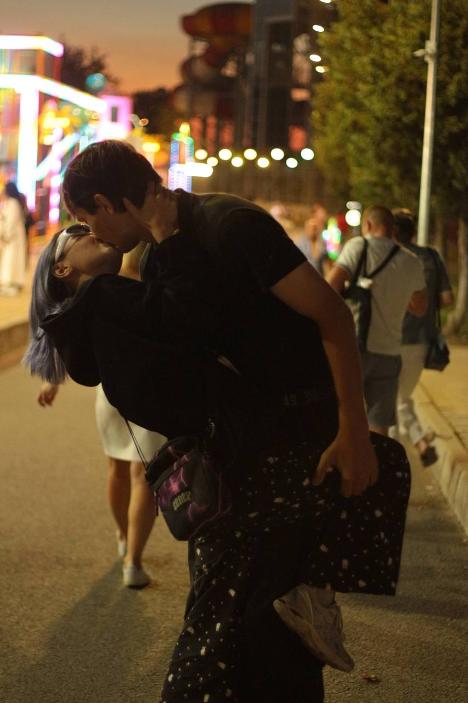

письмо, которое никуда не денется
Привет, Лисёнок.
Я хотел оставить здесь то, что иногда сложно сказать словами. Чтобы в любой день ты могла открыть это место и просто вспомнить: Киса тебя очень любит.
✦
несколько кадров
То, что хочется
беречь.



Самое красивое в наших днях — то, что они обычно совсем не пытаются быть красивыми.
на всякий случай
Если тебе
сейчас плохо.
Лисёнок, я не знаю, что произошло и что сейчас у тебя в голове. Но знаю одно: ты не одна.
Где-то есть человек, который очень тебя любит. Который выбрал тебя. И будет выбирать снова и снова.

дальше — больше
У нас ещё столько
всего впереди.
Две кружки на кухне. Кот, который носится по дому. Спонтанная прогулка после работы. И однажды — твоё «Киса, я дома».